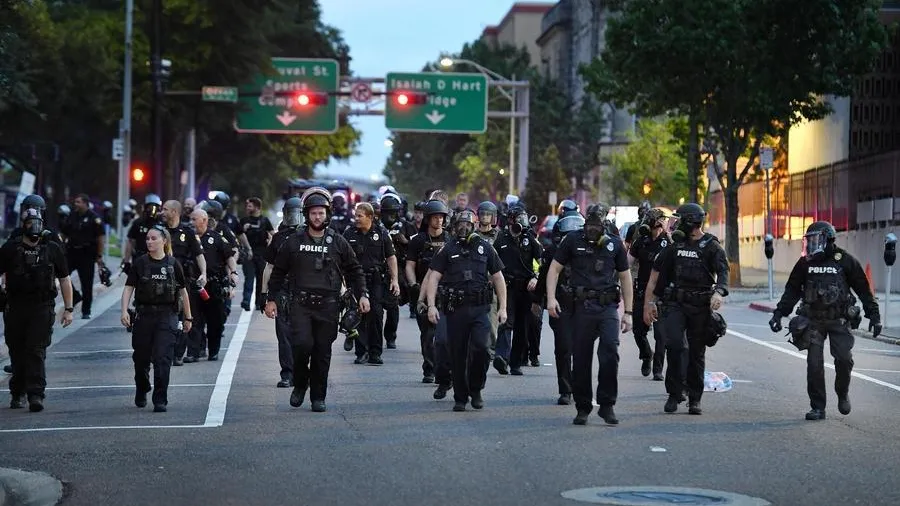

<!-- Hero -->
<style>
    @import url('https://fonts.googleapis.com/css2?family=Bungee&display=swap');
    </style>
<style>
    @import url('https://fonts.googleapis.com/css2?family=Bungee&family=Paytone+One&display=swap');
    </style>

<link rel="stylesheet" href="style.css" />
<section class="et-hero-tabs">
    <div class="toppart">
        
    </div>
    <h1>THE FIGHT AGAINST PREDICTIVE POLICING</h1>
    <h3>The dangers of AI in police departments</h3>
    <div class="et-hero-tabs-container">
      <a class="et-hero-tab" href="#tab-es6">About</a>
      <a class="et-hero-tab" href="#tab-flexbox">Models</a>
      <a class="et-hero-tab" href="#tab-react">Pioneers</a>
      <a class="et-hero-tab" href="#tab-angular">Change</a>
      <a class="et-hero-tab" href="#tab-other">Connect</a>
      <span class="et-hero-tab-slider"></span>
    </div>
  </section>

  <!-- Main -->
  <main class="et-main">
    <section class="et-slide" id="tab-es6">
      <h1>ABOUT</h1>
      <h3>What is Predictive Policing?</h3>
      <h4>With the aid of artificial intelligence, police agencies in many districts across the nation have constructed the method of predictive policing. Predictive policing alludes to the many policing practices that use demographic, environmental, and historical crime data that already exists. This data is fed into numerous artificial intelligence databases in order to predict future patterns of crime. Predictive policing through machine learning algorithms comes with the presumed ability to hypothesize where crime will happen along with who is going to be committing the crime. Law enforcement is utilizing artificial intelligence that rigorously surveillances pre-existing data to subconsciously profile certain groups of individuals.</h4>
      <h4>An assumed benefit of predictive policing is that it allows police departments to allocate their resources more effectively. Instead of randomly patrolling neighborhoods, police officers can “focus on areas with a higher probability of crime.” This targeted approach relies on historical data to make predictions. If this data contains biases (e.g., historical over-policing of certain neighborhoods or groups), the algorithm can perpetuate and even amplify these biases, leading to unfair targeting and discrimination against certain communities, particularly people of color and low-income neighborhoods. The presence of increased police surveillance and targeting can create a chilling effect on communities, where individuals may feel uncomfortable expressing themselves or engaging in public spaces for fear of being watched or targeted</h4>
    </section>
    <section class="et-slide" id="tab-flexbox">
      <h1>MODELS</h1>
      <h3>Who is behind these models?</h3>
      <h4>There are many predictive policing software tools that departments around the nation use, however there are 2 softwares that play a huge role in the progress of implementing these models into various cities, PredPol and Hunchlab.</h4>
      <h4>PredPol and HunchLab are both predictive policing software tools that use data analysis and statistical algorithms to forecast potential criminal activity. Both are designed to help law enforcement agencies allocate resources more effectively by identifying areas where crimes are likely to occur. While they share similar goals, each has its own unique approach and features. In terms of data analysis, PredPol uses an algorithm that analyzes historical crime data, such as the location, type, and time of previous crimes, to identify patterns and trends while HunchLab uses a variety of data sources, including crime reports, weather data, and other socio-economic factors, to build its predictions. Both of the softwares generate visual maps that highlight areas at risk of future crimes. Law enforcement agencies use these maps to guide patrols and allocate resources. PredPol's algorithm primarily focuses on property and violent crimes and offers simple, easy-to-understand visualizations while HunchLab offers more flexibility and customization allowing users to adjust various parameters and factors in its algorithm.</h4>
      <h4>Both PredPol and HunchLab aim to enhance law enforcement efficiency and improve public safety by using data-driven approaches to predict and prevent crime. However, the use of these tools raises concerns about bias, fairness, and privacy. Time and time again we have seen the over policing of low income neighborhoods and the increase of stop and frisks of local residents. These new patrols only serve to continuously feed the models biased and skewed data contributing to the dangerous cycle that impoverished, people of color find themselves in. This design is made in order to reinforce and push forward a racist and classist narrative of who should be deemed a criminal and what areas in a community are of higher worth.</h4>
    </section>
    <section class="et-slide" id="tab-react">
      <h1>PIONEERS</h1>
      <h3>Who has already stopped their use?</h3>
      <h4>Two cities that implemented predictive policing into their departments, deemed that the models not only did not reduce crime but also created unease within the communities that were being historically overpoliced again, and decided to discontinue their use of them were Los Angeles (LAPD) and Philadelphia (PPD).</h4>
      <h4>The Los Angeles Police Department, or LAPD, started to experiment with AI based predictive policing back in 2011 when it implemented the Predpol algorithm. Predpols algorithm uses the statistics of these measurements to determine which areas( 500x500 sq ft blocks) in the city of Los Angeles should be deemed “hot spots.” These hot spots are then recognized as the areas in the city to have the highest expected crime rate. Reports of these hot spots are then made by the Los Angeles Police Department at the start of each shift, which are then handed out to the department's police officers in order for them to use the report as a sort of guideline of where each of them should be patrolling. In Los Angeles many of the residents in these targeted areas were not unaware of these changes that their communities were facing. Feelings of anger and helplessness seem to be common in the minds of the residents in areas where constant stops by the police are the norm.  A lot of skepticism of the effectiveness of predictive policing and if it is actually reducing crime existed deep inside of multiple LAPD departments. Due to such skepticisms LAPD promised to issue reform of the devices and algorithms, however the Los Angeles Police Department canceled their contract with Predpol a year later in April of 2020.</h4>
      <h4>Similarly to Los Angeles, the city of Philadelphia was interested in the implementation of predictive policing practices within certain communities. The Philadelphia Police Department, or PPD, began its move in diving into the use of predictive policing software in 2015 with the software Hunchlab. The experiment was called 3PE, which consisted of 3 different patrol responses that were to be implemented in two phases. The first phase being called “The property crime phase” and the second being “The violent crime phase.” The PPD, just like certain departments of the LAPD, were skeptical of the effectiveness of the 3PE experiment's ability to reduce crime in the targeted crime predicted areas. Once both of the phases were finished the PPD was able to conduct analysis on the effectiveness of both phases.  Overall the 3PE experiment was deemed to be an experiment which had no effect on the effectiveness of reducing crime in hotspots of the city leading to the dropping of these models.</h4>
    </section>
    <section class="et-slide" id="tab-angular">
      <h1>CHANGE</h1>
      <h3>Who is still using these models?</h3>
      <h4>There are many police departments who are still using one of the many available models to implement Artificial intelligence into their systems and furthermore pushing predictive policing into their cities. These cities include but are not limited to; </h4>
      <h4>Baltimore, MD -
        Pleasanton, CA -
        Modesto, CA -
        Tacoma, WA -
        El Monte, CA -
        Elgin, IL -
        Livermore, CA -
        Reading, PA -
        Merced, CA -
        Haverhill, MA -
        Atlanta, GA -
        Chicago, IL -
        Detroit, MI -
        Houston, TX -
        Seattle, WA -
        </h4>
      <h4>There are even some college campuses, such as Berkeley, who use tools like predpol in their on-campus police departments. It is extremely important to push these departments to discontinue their use of these models due to many predictive policing tools' reliance on proprietary algorithms that are not openly disclosed to the public. This lack of transparency makes it difficult to assess the fairness and accuracy of the predictions and holds back accountability for potential misuse. Instead of relying on predictive policing, we as a whole should argue for alternative approaches such as community policing, restorative justice, and investments in social services that address the root causes of crime (e.g., poverty, lack of education, and unemployment). These approaches emphasize building trust and relationships between law enforcement and communities, prioritizing long-term safety and equity over short-term crime prevention. </h4>
    </section>
    <section class="et-slide" id="tab-other">
      <h1>CONNECT</h1>
      <h3>Join our community</h3>
      <h4>To make a difference every individual who is against the advancement of predictive policing needs to work together and to do that our community forum is the best place! This forum is a place to organize protests, create and spread awareness through petitions and confide in one another with your stories of how these practices have affected you and your community.</h4>
      <div id="buttn">
        <a href="https://discord.gg/P75w7Pgz">JOIN</a>
        </div>
    </section>
  </main>
  <script src="scripts.js"></script>